Week no. 7
Computer-Controlled Machining :
- Make something BIG ;
Make Something BIG
This assignment is focused on the converting the CAD drawing into the real-life objects.
The CNC (Computer Numeric Control machine) is the machine which takes the input of design files
and the machinable material like wood, wax, acrylic, composites, the output will be the fully designed
files which can be assembled to make the usable products.
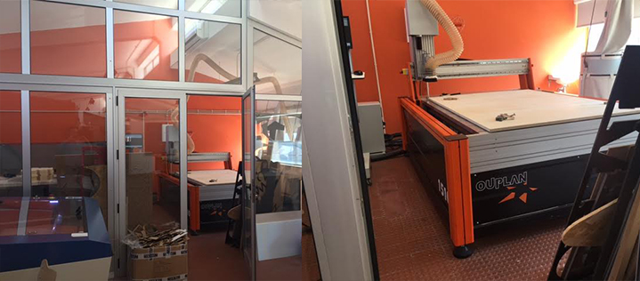
In this assignment it's time to make something which is life size and can be used by myself in my day to day activities.
I was thinking about the things that I simply make which can be usable in day-to-day life.
Cad Drawing:
Started with a design. For CNC milling, there are many approach in design. I'll show you omine, that starts from 3D
to get to the milling plans. I did the design with Rhino 3D. The objective is to make a table for a living room.
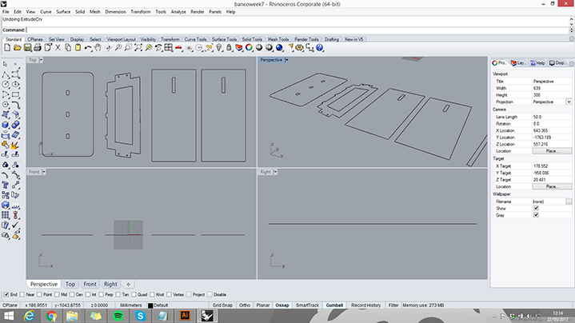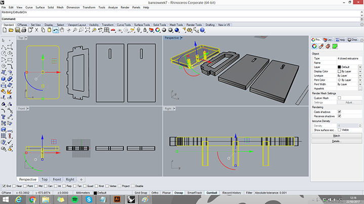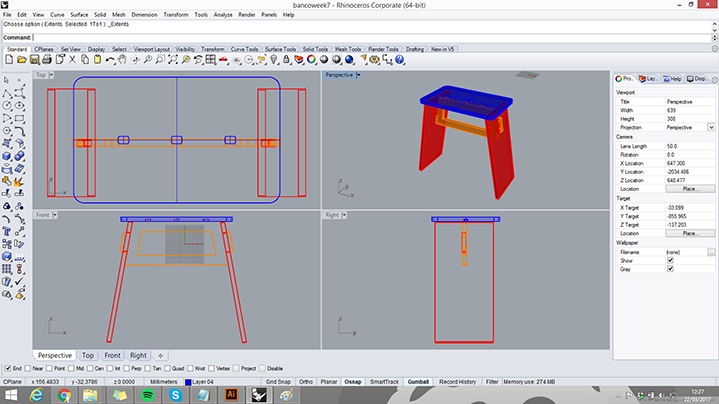
Testing the Design :
It's time to make it 2D which can be used by most of the machine softwares.
Also, when you have DXF files which can be opened in the software for further modifications if required.
To avoid wasting a full wood plate, I cutted in a 3mm thick plywood with the laser cutter, reducing the design.
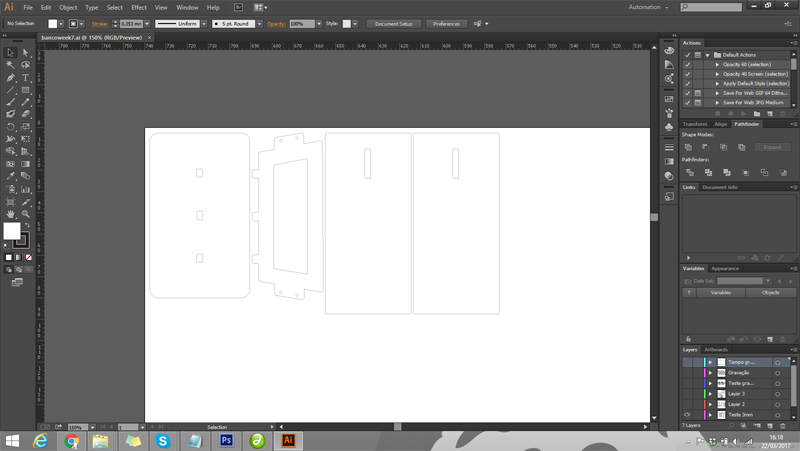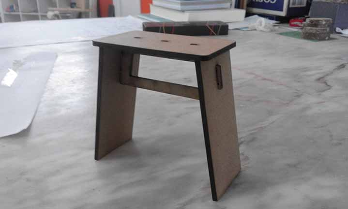
Milling
-
Then comes the milling...
I used a 15mm plywood to make the bench. For program the CNC Router machine I use
"ArtCam".I exported the dxf file to japanese illustrator 3.
Then I started by creating a new model and importing the vector to Artcam
and started by choosing the mill (4mm) and creating the tool paths:
The first path is clearence tool path to fit the top piece.
The second path is a cutting path, tha is going to cut on the line interior.
And the third path is like the sencond but is going to cut on the line exterior.
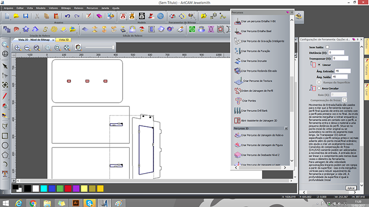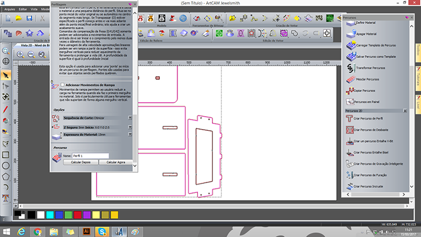
Then i saved the tool paths in the pretended sequence and exported the artcam file and opened it again on inocontrol.
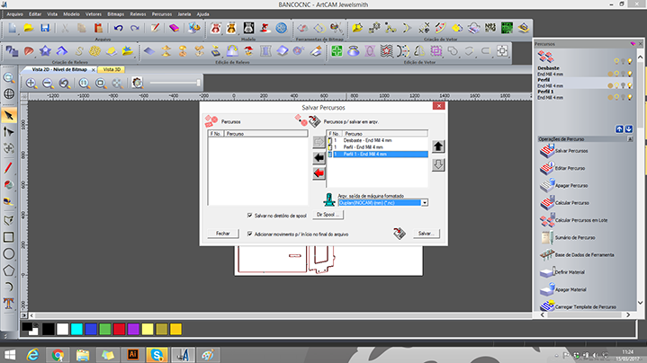 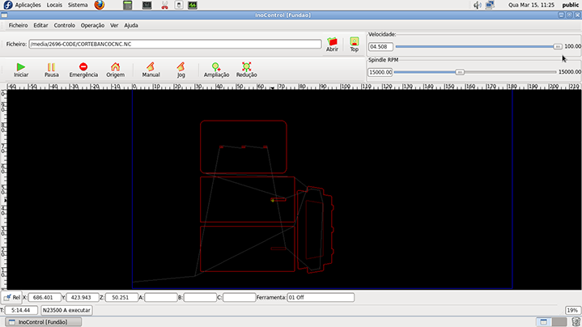
Then i placed the board on the machine and fixed it. With a manual jog tested some point on the
drawing to see if it fits. Set the origin, the speed and rpm and started to cut.
Assembling and Engraving
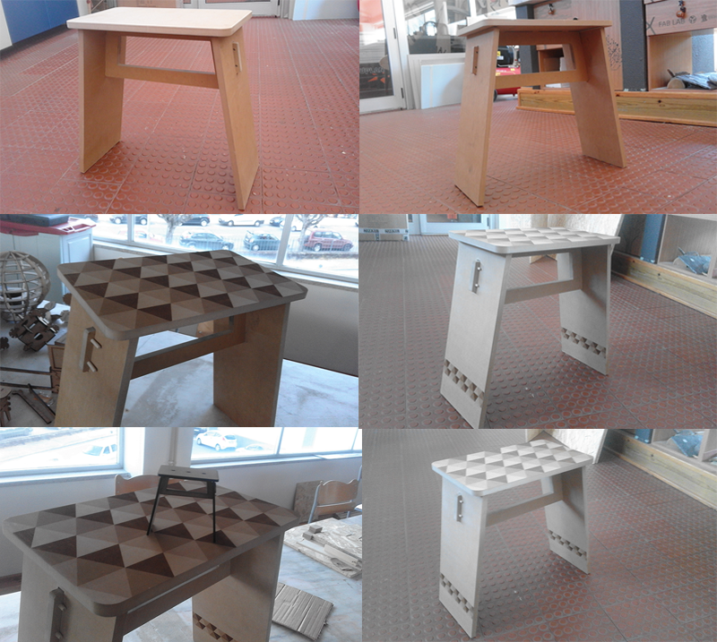